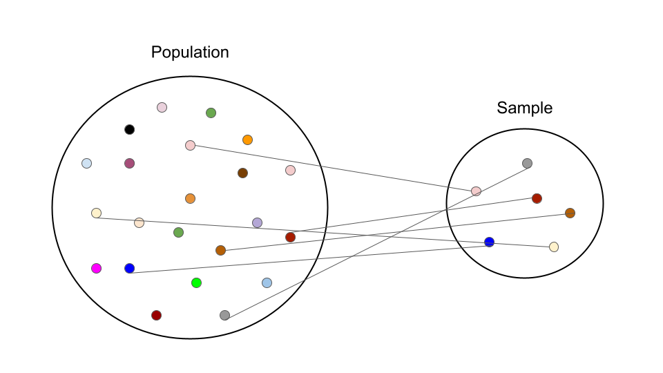

Introduction
Welcome back to the final module of this mini course. In the previous
module we learned how to transform,
tidy, and visualize data using the
tidyverse package.
In this course we learned how to import, wrangle, and visualize our data. In this final module, we will learn how to generate basic descriptive statistics.

Before jumping into descriptive statistics functions in R, we want to first introduce and review the following foundational statistics terminology:
- Population vs. Sample
- Parameter vs. Statistic
- Dependent and independent variables
- Levels of measurement
- Types of data
- Randomization
- Internal vs. External validity
Now that we know where we’ve been and where we’re headed, let’s go ahead and jump into it!
Population vs. Sample
The difference between a population and sample is one of the first concepts taught in statistics and research methods courses. A population is the complete group you want to make conclusions about and a sample is a subset of the population you’re interested in. Researchers often collect data from a sample to make conclusions (or draw inferences) about the entire population of interest.

For example, all undergraduate students at the University of Tennessee (UT) would be considered the entire undergraduate population of UT. However, a random selection of 200 undergraduate students from UT would be considered a sample of the population.
Now that we know the difference between a population and a sample, we can discuss the difference between a parameter and a statistic.
Parameter vs. Statistic
Parameters are numbers that describe the properties of an entire population and statistics are numbers that describe the properties of a sample.
Let’s turn back to our example of undergraduate students at UT. In Fall 2022, 27,039 undergraduate students were enrolled at UT which represents the entire undergraduate population at UT. Let’s say we have the average age of all 27,039 undergraduate students and the average age is 22 years old. The average age of the entire undegraduate student body at UT would be considered a parameter as it describes the average age of a population of interest. Let’s say we didn’t have access to the age of all 27,039 undergraduate students but collected a sample of 200 students and asked how old they were. We averaged the age of the 200 student sample and found the average age of this sample to be 21 years old. The average age of this sample would be considered a statistic as it describes a properties of a sample of interest.
In most research cases, it is difficult to collect data for an entire population so we instead take a sample in which we can make inferences about the population.
Independent and Dependent Variables
Researchers often examine relationships between variables in a sample of interest. Variables are characteristics of interest in a sample or population that can take on different values. For example, variables can be height, age, test scores, etc.
Independent Variable
Researchers want to examine relationship between variables as guided by their specific research question. This examination is done by specifying an independent variable and a dependent variable. An independent variable is a variable that varies or can be manipulated to explore the effect or relationship it has with a dependent variable. As the name implies, independent variables are variables that are independent of other variables/characteristics. Meaning that no other variables in the research study impact the independent variable.
Independent variables can be experimental, that is directly manipulated by the researcher (e.g., treatment conditions in an experiment), or naturally occurring characteristics of a subject such as height, weight, education, age.
Dependent Variable
A dependent variable, also called the outcome variable, is hypothesized to change as a result of changing or manipulating the independent variable. In other words, the dependent variable’s changes are contingent upon the independent variable. The dependent variable is the outcome of interest. A researcher aims to examine how the dependent variable changes as the independent is manipulated or varied.
Example
A classic example of independent and dependent variables is examining the relationship between students’ study hours and their test score. In other words, if students study more, do their test scores increase? If a researcher wishes to examine the relationship between study hours and test performance, the independent variable would be study hours and the dependent (or outcome) variable would be test scores.
Levels of Measurement
In statistics, variables can be quantified based four levels of measurement:
- Nominal
- Ordinal
- Interval
- Ratio
The levels of measurement are listed in ascending order, starting with nominal variables, based on the progressively detailed information they provide.
Nominal Variables
Nominal variables are names of categories data can fall in. An easy way to remember what nominal variables are is to think nominal = names. For example, students’ major can be considered a nominal variable in a dataset with postsecondary student data (e.g., accounting major, statistics major, education major).
Nominal variables do have a countable number of distinct groups so they cannot be unknown to the researcher or infinite. While nominal variables have a countable number of named categories, they don’t have a natural order. Going back to our example of students’ major, there is not natural order of accounting, statistics, or education majors as categories. Statistics is greater, equal, or less than the other majors.
Other examples of nominal variables can be gender, race/ethnicity, college minors.
Binary variables (also called dichotomous variables) are a type of nominal variables which can only have two distinct values. Examples of binary variables are male/female, pass/fail, control/treatment.
Since you can’t calculate the mean, median, or standard deviation of nominal variables, the mode is the proper measure of central tendenct for nominal variables as you can identify the most common occuring category in a dataset.
Ordinal Variables
Ordinal variables are similar to nominal variables since they too have categories of data, however, they are different, and provide more information than nominal variables, since ordinal variables can be ranked following a natural order of values.
Example of ordinal variables are education levels (primary, secondary, post-secondary), income (low, middle, hight), class rank.
While ordinal variables can be ranked, we don’t know the exact degrees of difference between these categories. Let’s take class rank for example. Person A might have a class rank of 10, Person B a class rank of 11, and Person C a class rank of 12. While we know the rank of these individuals, we don’t know the relative absolute different between these individuals. For example, Person A might have a GPA of 3.978, Person B a 3.969 GPA, and Person C a 3.900 GPA. While they’re class rank is ordered, they don’t have the same distance apart from each other in terms of GPA which is why we rank them if we don’t know the relative degrees of difference between them.
Calculating the median is a valid measure of central tendency for ordinal variables since the median is the middle ranked value which is fitting for rank-order data.
Interval Variables
The next most descriptive level of measurement are variables measured on an interval scale. Interval scales are used for data that’s continuous without a true zero. For example, SAT scores are measured on an interval scale where the distance between two points is meaningful (unlike ordinal variables) since we know the relative degrees of difference between these two points. However, SAT scores don’t have a true zero point (even if you answered every question on the SAT incorrectly, you wouldn’t receive a 0).
With interval scales, we can calculate the mean and standard deviation to determine central tendency and measure of variation.
Ratio Variables
The most descriptive level of measurement are ratio variables. Like interval variables, ratio variables are also used for continuous data, but are different for having a true zero measurement which represents a lack of an attibute. For example, height, weight, speed, and time are all ratio variables as they have true zero measurements which represents no height, weight, speed, or time.
Ratio variables are the top level of measurement as you can order the observations, know the difference between any two values, and be able to assess ratios between values as they have a true zero measurement
You can calculate and assess frequency distributions, medians, means, standard deviations, and ratios with ratio variables.
Types of Data
Now that we’ve started discussing the different scales our data can be measured on, let’s talk more about the different types of data we will encounter in the education research field.
Qualitative and Quantitative Data
In the education research field, you will hear a lot about qualitative and quantitative data.
Qualitative data
Qualitative data is typically collected through interviews, focus groups, document analysis, and text analysis and is used to understand the context, nuances, and themes of a research context. It’s often represented and analyzed through text (including text from audio transcriptions) to describe a research phenomenon. Ultimately, qualitative data is non-numeric and cannot be counted, measured, or easily expressed through the use of numbers.
Quantitative data
On the other hand, quantitative data quantifies a research phenomenon through data that can be measured and counted through the use of numbers. Quantitative data can be collected through any means in which you can count or measure data (e.g., surveys, administrative data, observations, etc.). Quantitative data is used to establish generalization about a sample for to a larger population by testing theories and assumptions using statistics.
Discrete, Continuous, and Categorical Data
Qualitative and quantitative data can often be represented through discrete, continuous, and categorical data types.
Discrete data
Discrete data is a numeric variable is considered a quantitative data type as it represented by integers. Discrete data can be counted which can only take on specific values (which are infinite). For example, you can count the number of students that enter a classroom but they will only be represented through whole numbers, meaning you can’t have 24.5 students in a classroom.
Continuous data
Continuous data is also a numeric variable that is considered a quantitative data type that can be represented with decimal values or fractions. Continuous data can also have finite or infinite number of values. For example, student’s GPA would be considered as continuous data as it has meaningful decimal places. While discrete data is used to be counted, continuous data is used to measure a data point using a predetermined scale.
Categorical data
Categorical data is data represented by a finite number of groups. It’s typically considered a qualitative data type as the data can be stored and grouped into categories rater than being measured numerically. However, categorical data can be counted and represented as discrete data. Examples of categorical data include typical demographic variables such as race/ethnicity, sex, educational attainment, socioeconomic status.
Randomization
Randomization techniques are often used in research settings in efforts to achieve a research design which mitigates biases and strengthens internal or external validity (more on this in the next section). There are two primary ways randomization occurs: 1) Random selection and 2) Random assignment.
Random Selection
Random selection is also known as random sampling and is a technique used to randomly select members of a population to be used as the study’s sample. There are four common types of random selection techniques that are used.
Simple random sampling: Each member of a population has an equal and fair probability of being selected. This is one of the most convenience and simple random selection techniques.
Systematic sampling: The selection criteria follows a predetermined interval (k) to determine the members of a population that will be selected. For example, every 12th person in list of alphabetized last names will be selected.
Stratified sampling: This technique first divides the population into subgroups with notable distinctions as predetermined by a researcher. For example, a researcher might want to interview teachers across the U.S. If the researcher has a list of teachers within all schools, the researcher can divide and categorize the schools by geographic urbanality (e.g., rural, suburban, urban) and then randomly teachers a specific number of teachers within each school. This technique allows researchers to ensure respective subgroups are adequately represented in the sample (creating a representative sample of teachers in the US).
Cluster sampling: This technique is similar to stratified sampling but instead it includes all members of a subgroup instead of randomly selected members inside of a subgroup.
Random Assignment
Random assignment is a randomization technique used to assign individuals into experimental conditions. In the simplest design of an experimental study, you will have a treatment and a control group. In order to ensure there are no systematic differences of individuals between the treatment and control group, you will randomly assign participants to each group. Random assignment is the hallmark of a “true” experiment since any differences found between the treatment and control group are attributed to the treatment or intervention.
Internal vs. External Validity
The final concept we will cover is on study validity which can be assessed through internal and external validity.
Internal Validity
Internal validity is in reference to an experimental study’s design and methods. Internal validity is assessed through the controlling and accounting for confounding variables. Strong internal validity allows you have have confidence that your results of an experiment are caused by only one independent variable (the treatment or intervention). Random sampling is one way to establish strong internal validity for experimental designs.
External Validity
External validity references how your results can be generalized to the population beyond the sample used in your study. In other words, can the results from the study be generalized to the real world? External validity does not assess causality or ruling out confounding variables. There are two types of external validity to consider: 1) population validity and 2) ecological validity.
Population validity considers how well your sample represents the population under study. A random sampling technique can establish population validity if used appropriately. Ecological validity considers how similar the study setting and the real-world setting are to each other. One method of assessing ecological validity is replicating the study at a different time, in a different setting, with different participants to assess if similar results are obtained.
Tasks
No tasks for this tutorial
Reflect
Let’s take some time to reflect before moving on. What is one thing that surprised you? What is one thing that confused you? Did you learn anything that might be useful in the type of work you do?
El Fin
Good job on completing the first of two tutorials in the final module of this course! Please move onto the next tutorial within this module on Canvas where we will learn how generate descriptive statistics in R.